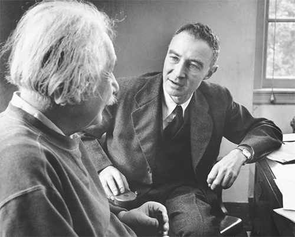

Cùng với J. Robert Oppenheimer, năm 1947
Cuộc chạy đua chế tạo bom H, tinh thần hăng hái chống cộng ngày càng lên cao và những cuộc điều tra an ninh mỗi lúc một thêm tự tung tự tác của Nghị sĩ McCarthy khiến Einstein mất tinh thần. Không khí này khiến ông nhớ lại sự nổi lên của Đức Quốc xã và chủ nghĩa bài Do Thái trong những năm 1930. Đầu năm 1951, ông than thở với Hoàng Thái hậu Bỉ: “Tai ương ở nước Đức những năm trước đang lặp lại nơi đây. Người ta ngầm đồng thuận không chút phản kháng và tự xếp chung hàng với quỷ dữ.”
Ông cố gắng giữ vị trí trung lập giữa những người chống Mỹ và những người chống Liên Xô như một phản xạ. Một mặt, ông cự tuyệt Leopold Infeld, người cộng tác với ông, khi ông này muốn ông ủng hộ những tuyên bố của Hội đồng Hòa bình Thế giới mà Einstein nghi ngờ là đã chịu ảnh hưởng của Liên Xô. Ông nói: “Theo quan điểm của tôi, chúng ít nhiều mang tính tuyên truyền.” Ông cũng có hành động tương tự đối với nhóm sinh viên người Nga thúc giục ông tham gia biểu tình phản đối cái mà họ cho là hành vi sử dụng vũ khí sinh học của Mỹ trong chiến tranh Triều Tiên. Ông trả lời: “Các bạn không thể trông chờ tôi phản đối những vụ việc mà có thể, và có khả năng rất cao, là chẳng bao giờ xảy ra.”
Mặt khác, Einstein từ chối ký vào một đơn kiến nghị được Sidney Hook tung ra tố cáo sự phản bội của những người đưa ra những cáo buộc chống lại nước Mỹ. Ông không thích thái cực nào cả. Như ông đã viết: “Tất cả những ai có lý trí cũng phải cố gắng thúc đẩy sự tiết chế và đưa ra một nhận định khách quan hơn.”
Trong một hành động mà ông cho là nỗ lực thầm lặng nhằm thực hiện sự tiết chế đó, Einstein viết một lá thư cá nhân đề nghị bỏ án tử hình đối với Julius và Ethel Rosenberg, những người bị kết tội chuyển bí mật bom nguyên tử cho Liên Xô. Ông tránh đưa ra bất cứ tuyên bố nào về vụ việc này, nó đã chia cắt nước Mỹ bằng một sự điên cuồng hiếm thấy ở thời kỳ mà truyền hình cáp chưa ra đời. Ông gửi thư cho Thẩm phán Irving Kaufman với lời hứa sẽ không công khai nó. Einstein không cho rằng hai vợ chồng nhà Rosenberg vô tội. Ông lập luận rằng bản án tử hình là quá nặng với một vụ án mà các bằng chứng mơ hồ, và kết luận bị lèo lái bởi sự kích động của công chúng hơn là sự thật.
Như một thông lệ của thời đó, Thẩm phán Kaufman chuyển bức thư cá nhân này cho FBI. Bức thư không chỉ được lưu trong hồ sơ về Einstein, mà còn được điều tra xem nó có thể cấu thành nên tội phản quốc hay không. Sau ba tháng, một báo cáo được gửi đến Hoover cho biết người ta không tìm ra bằng chứng phạm tội nào, nhưng lá thư vẫn được lưu trong tập hồ sơ.
Khi Thẩm phán Kaufman tiếp tục giữ nguyên bản án tử hình, Einstein viết cho Tổng thống Harry Truman, người sắp kết thúc nhiệm kỳ, đề nghị thay đổi bản án. Ông soạn thư trước tiên bằng tiếng Đức, rồi sau đó bằng tiếng Anh, mặt sau của mảnh giấy nháp đầy những phương trình mà hình như, căn cứ vào cách chúng được tái sử dụng, chẳng dẫn tới đâu. Truman đẩy quyết định cho tân Tổng thống Eisenhower, thế là án tử hình được giữ nguyên.
Lá thư gửi Truman của Einstein được công bố công khai, và tờ New York Times có một bài viết trên trang nhất với tiêu đề “Einstein ủng hộ đơn kháng án của Rosenberg”. Hơn 100 bức thư giận dữ từ khắp đất nước đổ về. Marian Rawles ở Portsmouth, Virginia, viết: “Ông cần một chút hiểu biết thông thường cộng thêm lòng trân trọng những gì mà nước Mỹ đã mang lại cho ông.” Charles Williams ở White Plains, New York, viết: “Ông đã đặt người Do Thái lên trên, còn Hoa Kỳ ở sau.” Từ Hạ sĩ Homer Greene, đang đóng quân ở Hàn Quốc: “Rõ ràng là ông thích nhìn thấy lính GI216 của chúng tôi bị giết. Hãy tới Nga mà sống hoặc về lại nơi mà ông đến ấy, vì tôi không thích những người Mỹ sống nhờ vào đất nước này mà lại đưa ra những tuyên bố phản quốc như ông.”
Không có nhiều bức thư tích cực, nhưng Einstein có một cuộc trao đổi thú vị với Thẩm phán O. Douglas, một thành viên Tối cao Pháp viện có tư tưởng tự do, ông này cũng không thành công trong việc ngăn chặn thi hành án. Einstein viết trong một bức thư cảm ơn: “Ông đã đấu tranh hết mình cho việc tạo ra một ý kiến công luận lành mạnh trong thời kỳ nhiều khó khăn này của chúng ta.” Douglas gửi lại một lá thư phúc đáp viết tay: “Ông đã dành tặng cho tôi lời tri ân thấu đạt những gánh nặng trong thời khắc tăm tối này – lời tri ân mà tôi sẽ luôn trân trọng.”
Nhiều bức thư chỉ trích đặt cho Einstein câu hỏi: Tại sao ông sẵn sàng lên tiếng cho vợ chồng Rosenberg, mà không phải cho chín bác sỹ người Do Thái mà Stalin đưa ra xét xử trong một vụ được cho là nằm trong âm mưu ám sát các lãnh tụ Nga của những người Phục quốc Do Thái. Trong số những người công khai đặt câu hỏi về cái mà họ thấy là tiêu chuẩn kép của Einstein có chủ bút của tờ New York Post và biên tập viên của báo New Leader.
Enstein đồng ý rằng cần lên án những hành động như thế. Ông viết: “Sự xuyên tạc công lý tự biểu thị trong tất cả các phiên tòa chính thức của Chính phủ Nga xứng đáng bị lên án vô điều kiện.” Ông nói thêm rằng những lá đơn kháng cáo cá nhân lên Stalin sẽ chẳng có tác dụng gì nhiều, nhưng có lẽ một tuyên bố chung từ một nhóm học giả sẽ có ích. Vì vậy, ông cùng Harold Urey217, nhà khoa học đoạt giải Nobel Hóa học và những người khác đã ra một tuyên bố chung như thế. Tờ New York Times viết: “Einstein và Urey nhắm vào chủ nghĩa bài Do Thái của Liên Xô” (Sau khi Stalin mất vài tuần sau đó, các bác sỹ đã được trả tự do).
Trong khi đó, ông nhấn mạnh trong nhiều bức thư và tuyên bố rằng người Mỹ không vì e ngại chủ nghĩa cộng sản mà từ bỏ quyền tự do dân sự và tự do tư tưởng mà họ vun đắp bấy lâu. Ông chỉ ra rằng ở Anh có nhiều người cộng sản, nhưng người dân ở đó không hề bị cuốn vào cơn điên cuồng của những cuộc điều tra an ninh nội bộ. Và người Mỹ cũng chẳng cần phải làm vậy.
Mỗi năm, theo thông lệ, chuỗi cửa hàng bách hóa Lord & Taylor lại trao một giải thưởng có vẻ kỳ lạ, đặc biệt vào đầu những năm 1950. Giải thưởng này tôn vinh suy nghĩ độc lập, và Einstein xứng đáng được trao giải năm 1953 cho tính “phá cách” của ông trong các vấn đề khoa học.
Einstein tự hào về tính cách mà ông biết là đã trợ giúp ông đắc lực trong nhiều năm. Ông phát biểu trong diễn từ nhận giải trên đài phát thanh: “Tôi vô cùng vui mừng khi thấy sự cứng đầu của một kẻ phá cách không cách gì sửa đổi lại được đón nhận nồng nhiệt.”
Mặc dù đây là việc tôn vinh tính phá cách trong lĩnh vực khoa học, nhưng Einstein cũng tận dụng cơ hội này để hướng sự chú ý tới các cuộc điều tra của McCarthy. Đối với ông, tự do tư tưởng có liên hệ với tự do chính trị. “Chắc chắn chúng ta quan tâm đến thái độ không phục tùng trong một lĩnh vực cách biệt,” ý ông là về vật lý. “Đến nay chưa có một ủy ban hay nghị viện nào cảm thấy cần kíp phải đối phó với những mối nguy cơ đe dọa đến an toàn nội tại của những công dân thiếu tinh thần phê phán hoặc bị hăm dọa trong lĩnh vực này.”
Ngồi nghe bài nói chuyện của ông có một giáo viên ở Brooklyn, tên là William Frauenglass; một tháng trước đó ông này từng được gọi đến Washington làm chứng trước Tiểu ban An ninh Nội bộ của Thượng viện để phục vụ cho cuộc điều tra về ảnh hưởng của những người cộng sản ở các trường trung học. Ông đã từ chối, và giờ mong Einstein cho biết liệu ông có làm đúng hay không.
Einstein viết thư trả lời và nói với Frauenglass rằng có thể công khai vụ việc này. Ông viết: “Các chính trị gia có tư tưởng phản động đã thành công trong việc nhồi nhét những mầm mống nghi ngờ về mọi nỗ lực tri thức. Giờ họ còn muốn đàn áp tự do giảng dạy.” Các trí thức cần làm gì trước tội ác này? Einstein tuyên bố: “Thẳng thắn mà nói, tôi chỉ thấy có con đường cách mạng bất hợp tác như Gandhi. Mỗi trí thức bị gọi ra làm chứng trước một ủy ban như thế phải từ chối.”
Sự dễ chịu mà Einstein có được suốt đời khi đứng lên đương đầu với những trận cuồng phong khiến ông bình thản ngoan cường trong suốt giai đoạn McCarthy. Khi các công dân bị yêu cầu chỉ điểm và khai báo trong những cuộc điều tra lòng trung thành của họ cũng như các đồng nghiệp của họ, ông đã dùng một biện pháp đơn giản. Ông kêu gọi mọi người bất hợp tác.
Ông cảm thấy, như ông nói với Frauenglass, rằng nên tiến hành việc này dựa trên những đảm bảo về quyền tự do được phát biểu trong Tu Chính Án thứ nhất, thay vì “lẩn tránh” bằng cách cầu viện đến sự bảo vệ của Tu Chính Án thứ năm, theo đó người dân không buộc phải tự nhận tội. Đứng lên đòi đảm bảo Tu Chính Án thứ nhất là nghĩa vụ của các trí thức, ông nói, bởi họ đóng vai trò đặc biệt trong xã hội như là người gìn giữ tư tưởng tự do. Ông vẫn còn nguyên cảm giác kinh hoàng trước việc đại đa số các trí thức ở Đức không vùng lên phản kháng khi Đức Quốc xã lên nắm quyền.
Khi bức thư Einstein viết cho Frauenglass được công bố, công luận thậm chí phản ứng dữ dội hơn cả khi ông gửi đơn kháng cáo cho Rosenberg. Các cây bút xã luận trên cả nước đều viết bài lên án.
Tờ New York Times: “Sử dụng các lực lượng bất tuân dân sự một cách phi lý và bất hợp pháp, như lời Giáo sư Einstein khuyên, trong trường hợp này là công kích cái xấu này bằng cái xấu khác. Vấn đề mà Giáo sư Einstein đứng lên chống lại chắc chắn cần được chấn chỉnh, nhưng giải pháp cho vấn đề ấy không phải là xem thường luật pháp.”
Tờ Washington Post: “Ông ta đã tự đặt mình vào nhóm cực đoan bằng chính đề nghị thiếu trách nhiệm của mình. Ông ta đã chứng minh một lần nữa rằng thiên tài khoa học không phải đảm bảo cho sự minh mẫn trong các vấn đề chính trị.”
Tờ Philadelphia Inquirer: “Đặc biệt đáng tiếc khi một học giả uyên bác và nổi tiếng lại để mình bị lợi dụng làm công cụ tuyên truyền cho những kẻ thù của quốc gia đã cho ông nơi nương náu đảm bảo này… Tiến sỹ Einstein đã tụt từ vị trí ngôi sao thành kẻ học đòi làm chính trị tư tưởng với những hậu quả tồi tệ.”
Tờ Chicago Daily Tribune: “Ta sẽ luôn sửng sốt khi thấy một người có sức mạnh trí tuệ vĩ đại trong lĩnh vực này lại là một kẻ ngốc nghếch, thậm chí là đần độn trong các lĩnh vực khác.”
Tờ Pueblo (Colorado) Star–Journal: “Ông ta, hơn hết thảy mọi người, đáng lẽ phải hiểu sự hơn ai hết. Đất nước này đã bảo vệ ông ta khỏi Hitler.”
Những công dân bình thường cũng có bài viết. Sam Epkin ở Cleveland viết: “Ông hãy nhìn vào gương và xem mình trông đáng hổ thẹn thế nào khi không cắt tóc, chỉ như một gã người rừng, với chiếc mũ len Nga chẳng khác gì một tay Bolshevik.” Victor Lasky, một tay viết phụ trách chuyên mục chống cộng, gửi đến một diễn văn dài thòng viết tay: “Cú châm ngòi gần đây nhất của ông nhắm vào các định chế của đất nước vĩ đại này cuối cùng cũng cho tôi hiểu rằng, dù tri thức khoa học của ông vĩ đại thế nào thì ông cũng chỉ là một kẻ ngu ngốc, một mối đe dọa đối với đất nước này.” George Stringfellow ở East Orange, New Jersey, thì nhấn mạnh nhầm: “Đừng quên rằng ông đã rời bỏ một đất nước cộng sản để đến đây, nơi ông có tự do. Đừng lợi dụng tự do đó, quý ngài ạ.”
Thượng nghị sĩ McCarthy cũng tung ra một bài tố cáo, dù có vẻ nó phần nào câm lặng do tầm vóc của Einstein. Ông ta nói, không hoàn toàn nhắm trực tiếp đến Einstein hoặc những gì ông đã viết: “Bất kỳ ai khuyên người Mỹ giữ bí mật những thông tin mà họ có về gián điệp hay về những kẻ phá hoại thì đều chính là kẻ thù của nước Mỹ.”
Tuy nhiên, lần này, quả thật có thêm nhiều thư ủng hộ Einstein. Trong số những lời đáp thú vị có bức thư đến từ người bạn Bertrand Russell của ông. Nhà triết học này viết cho tờ New York Times: “Các ông có vẻ nghĩ rằng người ta phải luôn tuân thủ pháp luật, bất kể nó tồi tệ thế nào đi nữa. Tôi thấy thôi thúc phải giả định rằng các bạn đang kết án George Washington và cho rằng đất nước của các bạn phải quay về thời thực hiện tròn bổn phận đối với Nữ hoàng Elisabeth II. Là một người Anh trung thành, tôi đương nhiên cổ vũ điều ấy, nhưng tôi sợ rằng nó không thể nhận được nhiều sự ủng hộ trong đất nước của các bạn.” Einstein viết cho Russell một bức thư cảm ơn, than thở: “Tất cả các trí thức trên đất nước này, đến những học sinh nhỏ tuổi nhất, hoàn toàn đều đã bị đe dọa.”
Abraham Flexner, giờ đã nghỉ hưu ở Viện Nghiên cứu Cao cấp và sống ở Đại lộ thứ Năm, nắm lấy cơ hội này để khôi phục quan hệ với Einstein. Ông ta viết: “Là một người Mỹ bản xứ, tôi biết ơn ông vì bức thư ông viết cho ông Frauenglass. Những công dân Mỹ nói chung sẽ có vị trí tôn quý hơn nếu họ cự tuyệt hoàn toàn việc thốt ra một lời nào nếu bị chất vấn về ý kiến và niềm tin cá nhân của họ.”
Lá thư từ Richard, cậu con trai đang ở độ tuổi thiếu niên của Frauenglass, là một trong những lá thư cảm động nhất. Cậu bé viết, có chút sự thật trong đó: “Trong thời điểm hỗn loạn này, tuyên bố của ông có thể thay đổi cả con đường của quốc gia này.” Cậu viết rằng cậu sẽ trân trọng bức thư của Einstein đến cuối đời, và tái bút: “Những môn học mà cháu thích cũng là những môn mà ông thích – toán và vật lý. Giờ cháu đang học lượng giác.”
Có hàng chục người bất đồng chính kiến sau đó đã cầu xin Einstein can thiệp giúp họ nhưng ông từ chối. Ông đã nói rõ quan điểm và thấy không cần phải tiếp tục dấn sâu vào cuộc xung đột.
Nhưng một người đã thuyết phục được ông: Albert Shadowitz, vốn là giáo sư vật lý và từng là kỹ sư trong chiến tranh, ông đã góp phần lập một công đoàn mà cuối cùng đã bị đẩy ra khỏi phong trào lao động vì có những người cộng sản nằm trong ủy ban. Thượng Nghị sĩ McCarthy muốn chứng minh rằng công đoàn này có liên hệ với Moscow và gây nguy hiểm cho ngành công nghiệp quốc phòng. Shadowitz, từng là thành viên của Đảng Cộng sản, quyết định viện đến sự bảo vệ của Tu Chính Án thứ nhất, chứ không phải Tu Chính Án thứ năm, như lời khuyên của Einstein với Frauenglass.
Shadowitz rất lo lắng về tình cảnh của mình, vì vậy ông đã gọi cho Einstein xin giúp đỡ. Nhưng số của Einstein không có trong danh bạ. Vì vậy, ông phải lái xe từ bắc New Jersey đến Princeton và xuất hiện trước cửa nhà Einstein, ở đây ông gặp người canh gác tận tâm, Dukas. Bà hỏi: “Ông có lịch hẹn không?” Ông thừa nhận là không. Bà tuyên bố: “Thế thì ông không thể cứ thế mà đến và vào nói chuyện với Giáo sư Einstein được.” Nhưng khi ông ta giải thích về vấn đề của mình, bà nhìn ông ta chằm chằm một lúc rồi vẫy tay bảo ông ta vào.
Einstein lúc đó đang mặc bộ đồ mà ông thường mặc: một chiếc áo rộng và quần nhung kẻ. Ông đưa Shadowitz lên phòng làm việc, và quả quyết việc ông ta làm là đúng. Ông ta là một trí thức và bổn phận đặc biệt của những người trí thức là đứng lên trong những vụ việc như thế này. Einstein hào hiệp đề nghị: “Nếu ông chọn cách này thì cứ thoải mái sử dụng tên tôi theo bất cứ cách nào ông muốn.”
Quyền tự do hành động này làm Shadowitz ngạc nhiên và vui mừng sử dụng nó. Trưởng ban cố vấn của McCarthy, Roy Cohn, là người thẩm vấn còn McCarthy ngồi nghe trong buổi điều trần kín đầu tiên. Ông có phải là người cộng sản không? Shadowitz trả lời: “Tôi từ chối trả lời câu hỏi này, và tôi đang làm theo lời khuyên của Giáo sư Einstein.” Nghe đến đây, McCarthy bất ngờ giành quyền thẩm vấn. “Ông biết Einstein?” Shadowitz trả lời: “Không hẳn, nhưng tôi đã gặp ông ấy”. Khi kịch bản này lặp lại trong buổi điều trần công khai, nó lại biến thành tít đầu và kích động một loạt thư mới đổ đến như vụ Frauenglass.
Einstein tin rằng mình đang là một công dân tốt, hơn là một công dân phản bội. Ông đã đọc Tu Chính Án thứ nhất và cảm thấy việc làm theo tinh thần của Tu Chính Án này là cốt lõi của sự tự do được ca ngợi ở Mỹ. Một người phê phán phẫn nộ đã gửi cho ông một bản sao tấm thẻ nội dung là cái mà ông ta gọi là “Tín điều Mỹ”. Trong đó có phần: “Bổn phận của tôi đối với đất nước tôi là phải yêu nước, ủng hộ Hiến pháp, chấp hành pháp luật của nó.” Einstein viết vào lề: “Đây chính xác là điều tôi đang làm.”
Khi học giả người da đen nổi tiếng W.E.B. Du Bois bị kết tội theo những cáo buộc xung quanh việc ông giúp truyền bá đơn kiến nghị do Hội đồng Hòa bình Thế giới soạn thảo, Einstein tình nguyện đứng ra làm nhân chứng cho ông ta. Việc này thể hiện sự nhất quán trong quan điểm của Einstein về các quyền dân sự và tự do ngôn luận. Khi luật sư của Du Bois thông báo cho tòa rằng Einstein sẽ xuất hiện, Thẩm phán nhanh chóng quyết định dừng vụ xét xử.
Một vụ việc gần hơn là vụ của J. Robert Oppenheimer. Sau khi lãnh đạo các nhà khoa học phát triển bom nguyên tử rồi trở thành người đứng đầu Viện nơi Einstein vẫn chăm chỉ làm việc, Oppenheimer vẫn là cố vấn cho Ủy ban Năng lượng Nguyên tử [AEC – Atomic Energy Commission] và có giấy đảm bảo an ninh. Bằng việc phản đối chương trình phát triển bom H lúc đầu, ông đã biến Edward Teller thành người đối địch, và ông cũng liên minh với ủy viên của Ủy ban AEC, Lewis Strauss. Vợ của Oppenheimer, Kitty, và anh trai của bà, Frank, trước chiến tranh là đảng viên Đảng Cộng sản, chính Oppenheimer cũng thoải mái kết giao cả với các thành viên của đảng này lẫn các nhà khoa học mà lòng trung thành của họ đang bị nghi vấn.
Tất cả những điều đó kéo tới một nỗ lực vào năm 1953 nhằm tước giấy bảo đảm an ninh của Oppenheime. Dẫu sao thì nó cũng sắp hết hạn và đáng lẽ có thể giải quyết vấn đề này một cách êm thấm, nhưng trong không khí sôi sục, cả Oppenheimer lẫn các đối thủ của ông đều không muốn tránh xa khỏi thứ mà họ cho là vấn đề nguyên tắc. Vì vậy, một cuộc điều trần bí mật được dự kiến tổ chức ở Washington.
Một hôm ở Viện, Einstein tình cờ gặp Oppenheimer, khi đó chuẩn bị ra điều trần. Họ tán chuyện vài phút, và khi Oppenheimer ra xe, ông kể lại cuộc trò chuyện đó cho một người bạn. “Einstein nghĩ rằng cuộc công kích nhằm vào tôi là sự xúc phạm thái quá, và rằng đơn giản là tôi nên từ chức.” Einstein cho Oppenheimer là “gã khờ” vì thậm chí đã điều trần về các cáo buộc. Là người đã phục vụ đất nước này một cách đáng ngưỡng mộ như thế, Oppenheimer chẳng có bổn phận nào phải nộp mình cho “cuộc săn phù thủy” kia.
Cuối cùng thì các buổi điều trần bí mật cuối cùng cũng bắt đầu, và một vài ngày sau đó – đó là vào tháng Tư năm 1954, ngay khi nhà báo Edward R. Murrow của đài CBS làm một chương trình về Joseph McCarthy và những tranh cãi xung quanh các cuộc điều tra an ninh đang lên cao trào – chúng được công khai trên một bài báo độc quyền của James Reston đăng trên trang nhất tờ New York Times. Cuộc điều tra của Chính phủ về lòng trung thành của Oppenheimer ngay lập tức trở thành một vấn đề gây tranh cãi công khai nổi tiếng.
Được cảnh báo rằng chuyện này sẽ diễn ra, Abraham Pais đi đến Phố Mercer để đảm bảo Einstein đã được chuẩn bị cho những cuộc gọi không thể tránh khỏi từ báo chí. Einstein cười cay đắng khi Pais nói với ông rằng Oppenheimer khăng khăng tiếp tục tham gia điều trần, hơn là cắt đứt mối liên hệ với Chính phủ. Einstein nói: “Vấn đề của Oppenheimer là ông ta yêu một người phụ nữ không yêu ông ta – Chính phủ Hoa Kỳ.” Tất cả những gì Oppenheimer phải làm, Einstein nói với Pais, là “đến Washington và nói với các quan chức rằng họ là lũ ngốc và đi về nhà”.
Oppenheimer thất bại. AEC bỏ phiếu cho phán quyết rằng ông là một người Mỹ trung thành nhưng cũng là nguy cơ về an ninh và – một ngày trước khi giấy bảo đảm an ninh của ông hết hạn, nó bị rút lại. Einstein đến thăm ông tại Viện vào ngày hôm sau và thấy ông buồn nản. Buổi tối hôm đó, Einstein nói với một người bạn rằng thật khó hiểu “tại sao Oppenheimer lại xem chuyện đó là hệ trọng như vậy”.
Khi một nhóm các cán bộ giảng viên của Viện thông qua một đơn kiến nghị khẳng định sự ủng hộ dành cho vị Giám đốc của họ, Einstein nhanh chóng ký tên. Những người khác ban đầu từ chối, một số là do lo sợ. Một người bạn nhớ lại rằng chuyện này đã kích động Einstein. Ông “liền đặt ‘tài năng làm cách mạng của mình’ vào hoạt động thu thập chữ ký ủng hộ”. Sau một vài cuộc gặp, Einstein đã thuyết phục hay làm tất cả mọi người phải xấu hổ mà ký tên vào bản tuyên bố.
Lewis Strauss, đối thủ của Oppenheimer ở AEC, có chân trong ban giám đốc Viện, và Viện đang lo lắng về tình hình các giảng viên. Liệu ông ta có tìm cách đuổi việc Oppenheimer hay không? Einstein viết cho người bạn của mình là Nghị sĩ Herbert Lehman ở New York, một mạnh thường quân khác của viện, trong thư ông gọi Oppenheimer là “Giám đốc thừa năng lực mà Viện từng có”. Ông nói rằng việc sa thải Oppenheimer “sẽ khiến tất cả giới trí thức căm phẫn.” Và thế là, các mạnh thường quân bỏ phiếu giữ Oppenheimer tại nhiệm.
Chẳng bao lâu sau vụ Oppenheimer, Adlai Stevenson, ứng cử viên Tổng thống trước đây và trong tương lai của đảng Dân chủ, một người đặc biệt được giới trí thức yêu quý, ghé đến Princeton thăm Einstein. Einstein bày tỏ lo ngại của mình về cách mà các nhà chính trị đang kích động nỗi sợ cộng sản. Stevenson trả lời có phần thận trọng. Những người Nga quả thật là mối nguy hiểm. Sau khi trao đổi, Stevenson cảm ơn Einstein vì đã ủng hộ ông ta vào năm 1952. Không cần cảm ơn, Einstein đáp, ông làm vậy chỉ vì kém tin tưởng Eisenhower hơn. Stevenson nói ông ta thấy sự thành thật đó thật mới mẻ, và Einstein quyết định rằng Stevenson không hoàn toàn vênh vang như cái vẻ lúc đầu.
Việc Einstein phản đối chính sách chống cộng của McCarthy nổi nên một phần do nỗi sợ chủ nghĩa phát xít trong ông. Ông cảm thấy mối đe dọa nguy hiểm nhất trong lòng nước Mỹ không đến từ những người cộng sản có xu hướng lật đổ, mà đến từ chính những người lợi dụng nỗi sợ cộng sản để đàn áp tự do dân sự. Ông nói với nhà lãnh đạo chủ nghĩa xã hội, Norman Thomas: “Nước Mỹ ít bị ảnh hưởng bởi những người cộng sản, mà chủ yếu là bị ảnh hưởng bởi cuộc săn lùng những người cộng sản ở đất nước này.”
Kể cả với những người ông không biết, Einstein cũng bày tở nỗi chán ghét đó một cách thẳng thắn. Ông trả lời một bức thư dài 11 trang của một người dân New York mà ông chưa từng gặp mặt: “Chúng ta đã đi được một quãng dài hướng tới một chế độ kiểu phát xít. Có một sự tương đồng rõ ràng giữa các điều kiện chung ở đây cũng giống như từng có ở Đức năm 1932.”
Một số đồng nghiệp lo ngại rằng ý kiến của Einstein sẽ gây ra tranh cãi đối với Viện. Ông nói đùa rằng những lo ngại đó khiến tóc ông chuyển sang màu muối tiêu. Quả thật, ông đã lấy một bài hát Mỹ tinh nghịch để nói lên những gì mà ông cảm nhận. Ông viết cho Hoàng Thái hậu Elisabeth: “Tôi đã trở thành một đứa trẻ kinh khủng tại quê hương mới của mình do thiếu khả năng giữ im lặng và nuốt trôi tất cả những gì đang xảy ra. Ngoài ra, tôi tin rằng những người lớn tuổi và hầu như chẳng có gì để phải mất cần sẵn lòng lên tiếng thay cho những người trẻ vốn là đối tượng đang bị kìm kẹp hơn nhiều.”
Ông thậm chí tuyên bố, bằng giọng từ tốn và hơi bông đùa, rằng nếu sống trong tình cảnh đe dọa chính trị như đang diễn ra, một người như ông có lẽ sẽ không làm giáo sư. Ông nói với Theodore White của tạp chí Reporter: “Nếu tôi còn trẻ và phải quyết định kiếm sống thế nào, tôi sẽ không cố gắng trở thành một nhà khoa học, học giả hay giáo viên. Tôi thà trở thành một anh thợ sửa ống nước hoặc người bán hàng rong với hy vọng rằng mình vẫn còn có độc lập dù ở mức khiêm tốn.”
Tuyên bố này giúp ông có được thẻ thành viên danh dự của công đoàn thợ sửa đường ống, và gây ra một cuộc tranh luận trên cả nước về tự do học thuật. Ngay cả những nhận xét hơi phù phiếm của Einstein cũng chứa đựng nhiều xung lượng.
Einstein đã đúng khi nhận định rằng tự do học thuật đang bị tấn công, và sự phương hại đến các ngành nghề học thuật là có thật. Chẳng hạn David Bohm, một nhà vật lý lý thuyết nổi tiếng làm việc cùng Oppenheimer và Einstein tại Princeton và cũng là người có công sửa lại các khía cạnh nhất định trong cơ học lượng tử, đã bị triệu ra điều trần trước Ủy ban các hoạt động phi Mỹ [House Un-American Activities Committee] của Thượng viện, ông đã viện đến Tu Chính Án thứ năm, nhưng vẫn bị mất việc và cuối cùng phải chuyển tới Brazil.
Tuy nhiên, nhận xét của Einstein – và chuỗi kinh cầu nguyện cho ngày kết thúc của ông – thì lại quá lời. Dù ông có nhiều câu nói thiếu nhạy cảm về chính trị, song không có hành động thật sự nào nhắm vào việc khóa miệng ông hay đe dọa công việc của ông. Kể cả những nỗ lực như trò hề của FBI khi lập hồ sơ về ông cũng không cấm cản những phát biểu tự do của ông. Khi cuộc điều tra Oppenheimer kết thúc, cả Oppenheimer và Einstein vẫn an toàn ở nơi trú ẩn của họ tại Princeton, tự do suy nghĩ và lên tiếng theo ý họ. Việc cả hai người bị chất vấn về lòng trung thành và thỉnh thoảng không được thông qua giấy bảo đảm an ninh là chuyện đáng xấu hổ. Tuy nhiên, bất chấp những nhận xét mà thỉnh thoảng Einstein đưa ra, mọi chuyện không hề giống như nước Đức dưới thời Quốc xã, hay bất cứ điều gì gần như thế.
Einstein và một số người tị nạn khác thường xem chính sách chống cộng của McCarthy là sự tụt lùi vào hố đen của phát xít, chứ không phải là một khúc quanh thường xảy ra trong một nền dân chủ. Cuối cùng, nền dân chủ của nước Mỹ đã tự khắc phục các vấn đề như nó luôn thế. Năm 1954, McCarthy bị loại bỏ khỏi chính trường trong ê chề bởi các luật sư quân đội, các đồng nghiệp tại Thượng viện, Tổng thống Eisenhower, và các nhà báo như Drew Pearson và Edward R. Murrow. Khi biên bản điều trần trong vụ của Oppenheimer được công bố, nó đã khiến danh tiếng của Lewis Strauss và Edward Teller bị tổn hại, ít nhất là trong giới hàn lâm và khoa học, cũng bằng với những gì họ từng gây tổn hại cho danh tiếng của Oppenheimer.
Einstein không quen thuộc với những hệ thống chính trị tự khắc phục vấn đề. Ông cũng không hoàn toàn đánh giá cao khả năng phục hồi mau chóng của nền dân chủ Mỹ và cách đất nước này nuôi dưỡng tự do cá nhân. Vì vậy, đã có khoảng thời gian mà sự khinh thường của ông đối với nền chính trị của nước Mỹ trở nên sâu sắc hơn. Nhưng ông được giải thoát khỏi nỗi thất vọng ghê gớm của mình nhờ sự vô tư và khiếu hài hước. Ông không phải chịu số phận từ giã cuộc đời như một người cay đắng.